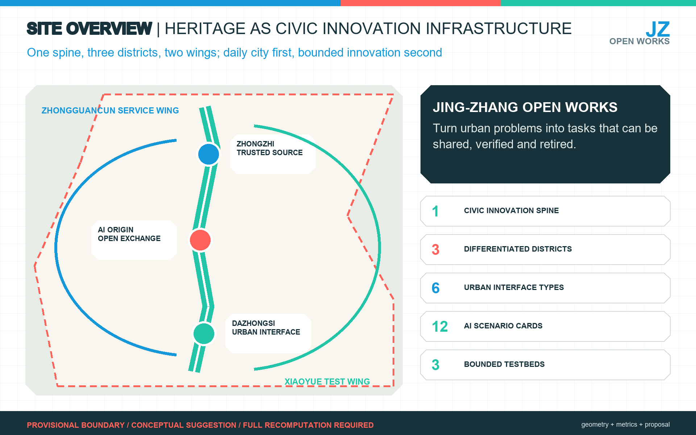
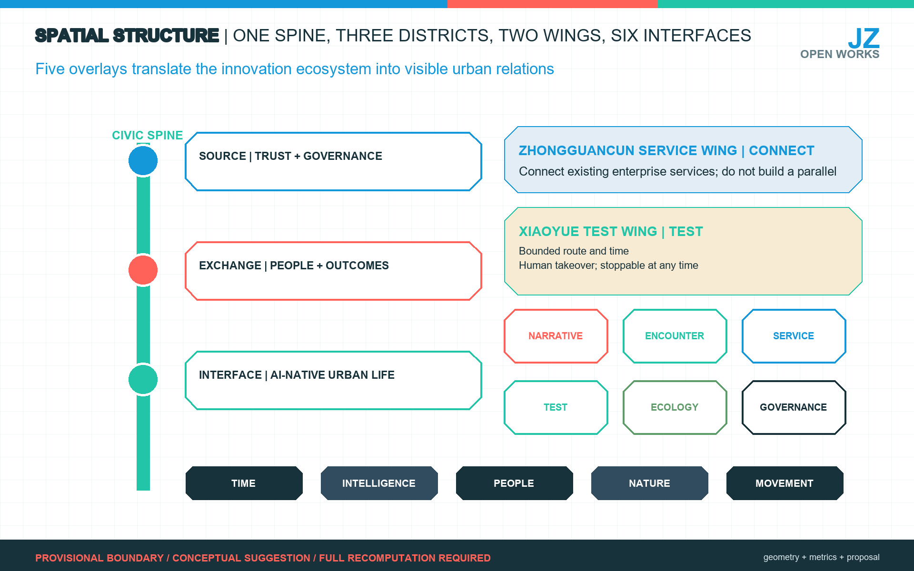
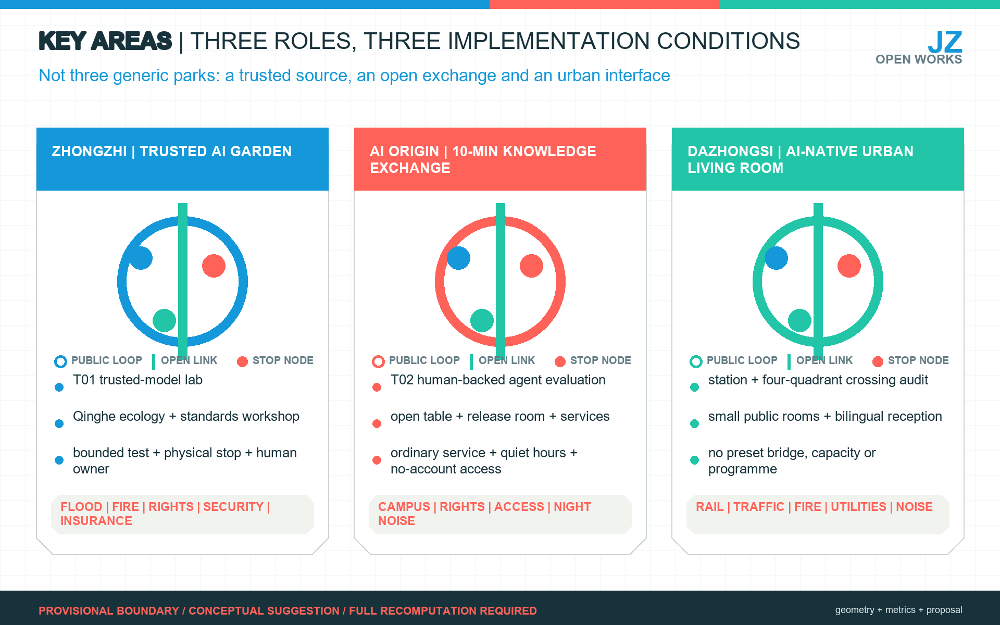
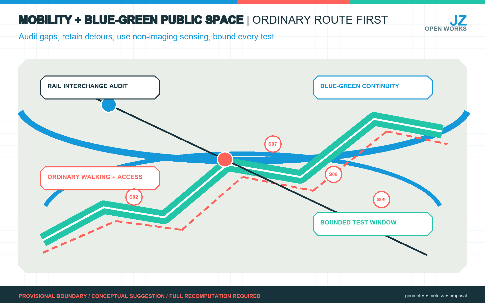
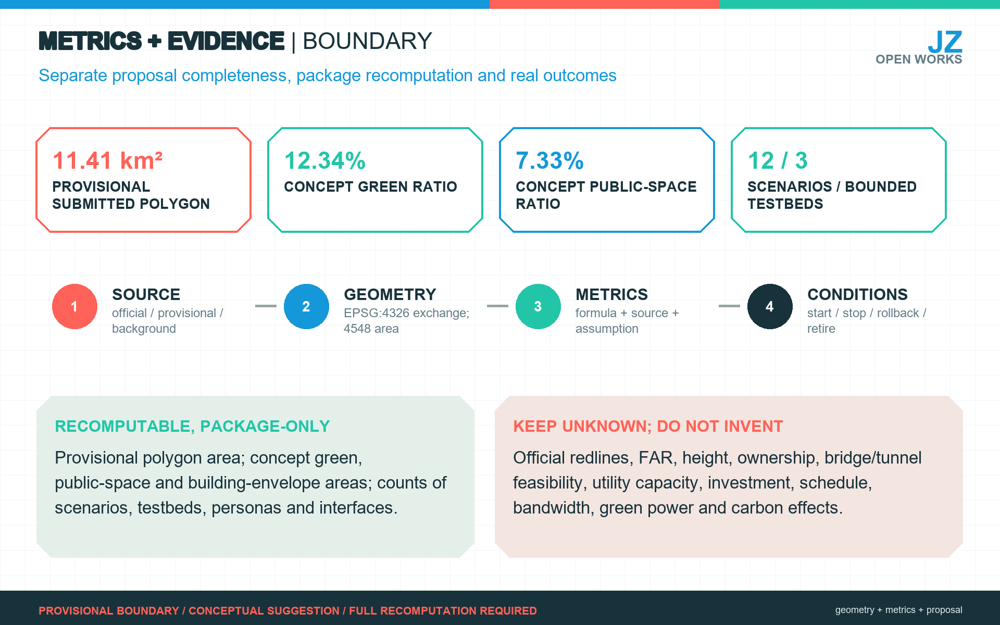

Jing-Zhang Open Works
Using railway heritage and the existing innovation ecosystem as a civic base, one spine, three districts, two wings, six urban interfaces and the JZ-PATCH protocol turn AI innovation into everyday services that can be tested, stopped and audited.
Jing-Zhang Open Works
Core proposition: Open Works does not line up devices as a technology show belt. It turns a century of railway heritage into civic innovation infrastructure. A public innovation spine connects Zhongzhi Garden, Beijing AI Origin Community and Dazhongsi; a Zhongguancun service wing and a Xiaoyue River test wing provide support. Every AI scenario must retain an ordinary equivalent service, a named human owner, minimum data, a stop rule and a public review. All spatial moves are conceptual suggestions for professional deepening after official boundaries, controls, ownership, transport, utilities, fire, heritage and operating responsibilities are available.
Design Basis and Source List
The primary formal basis is the official competition announcement, supplemented by the repository site package, agent taskbook, standards, source registry and processed fact pack. The package distinguishes official public facts, background cases, repository-derived navigation and provisional geometry. No background or provisional item is upgraded into an official redline, planning control or public commitment. 来源 来源 来源
Existing-condition diagnosis remains an explicit design-depth requirement. 深度
The phase-one Jing-Zhang Railway Heritage Park is a real public-space base: the official report describes the opened section from Qinghuadong Road to Zhichun Road as about 2.5 km and 16.8 ha, with railway heritage retained or displayed. Public technology and culture events demonstrate that such programmes have an audience, but they do not prove stable year-round demand. 来源 来源

The repository currently provides rough provisional polygons rather than official precise boundaries. The submitted site_boundary.geojson and key_areas.geojson therefore remain provisional_constraint, official_boundary=false. They support generation, topology checks and discussion only. 来源 来源
Replacing them with official polygons requires recomputing land use, buildings, roads, green space, public space, phasing, figures and metrics. 空间数据 指标
Three-Level Scope Framework
The coordinated research area addresses the approximate 43.6 sq km innovation ecosystem and future-city strategy; the approximate 11.4 sq km overall design area addresses urban renewal, functional structure, mobility, infrastructure and character; the three key areas, announced at approximately 368.4 ha in total, test detailed spatial and operating propositions. The areas are connected as a decision chain, not treated as three unrelated drawings. 标准 深度
The key-area layer and count provide the package-level index. 空间数据 指标
The concept is Jing-Zhang Open Works / JZ Works. “Open Works” means both things made useful and a visible account of how the city works. The structure is one spine, three districts, two wings and six interfaces. The railway-park corridor is the civic innovation spine; Zhongzhi Garden is the source of trusted technology and governance, AI Origin Community the exchange for people and outcomes, and Dazhongsi the urban interface for AI-native enterprise. The Zhongguancun service wing connects existing enterprise services; the Xiaoyue River test wing hosts bounded validation. Narrative, encounter, service, test, ecology and governance interfaces translate the innovation chain into ordinary urban experience. 来源 深度

Five overlays guide design: Time for railway and network memory; Intelligence for universities, firms, compute, open source and services; People for residents, children, older people, researchers, founders and visitors; Nature for the park, Qinghe, Xiaoyue River and small green spaces; and Movement for walking, cycling, accessibility and rail interchange. They describe relationships, not statutory controls. 标准
Coordinated Research Area: Industry and Future City Research
The research area builds an innovation chain of university research, open collaboration, enterprise conversion, public experience and international communication. It does not create a parallel platform. Beijing AI Origin Community is treated as an existing near-campus carrier; the Haidian large-model ecosystem service station is the service interface; AI North Latitude Community is a regional peer. 来源 来源 来源
Official information supports a Haidian-Zhangjiakou compute-collaboration direction, but this proposal claims no bandwidth, latency, green-electricity share or carbon result. 来源
Regional Synergy Evidence and Interface Matrix
Regional synergy is therefore separated into evidence, proposed exchange and unconfirmed commitments. “Existing evidence” below means only evidence registered in this package. Every exchange and spatial interface is a design proposition pending confirmation by the counterpart; none is a cooperation agreement, resource commitment or delivery arrangement. 来源 标准
| Counterpart | Existing package evidence | Proposed capability exchange | Jing-Zhang spatial interface | Unconfirmed and not promised |
|---|---|---|---|---|
| AI North Latitude Community | Registered as a regional peer; no bilateral agreement or operating record is available 来源 | Exchange scenario briefs, community-feedback methods and public-review templates | Open-source table at AI Origin Community and the JZ-07 Open Works Guild | Lead entities, recurring programme, staffing and budget |
| Future Science City | Named by the taskbook; no project-level formal evidence is in this package | Exchange research-question briefs and public-scenario validation protocols; disciplines and projects require formal coordination | Task interface in the Zhongguancun service wing, with no new land claim | Participating institutions, results, data rights and annual programme |
| Huairou Science City | Named by the taskbook; no project-level formal evidence is in this package | Exchange needs for public interpretation of science with methods for reversible civic-space prototypes | Narrative interface and removable display windows in the heritage park | Exhibits, IP, curator, operator and opening schedule |
| Beijing E-Town | Named by the taskbook; no product or testing agreement is evidenced | Exchange intelligent-manufacturing/robotics needs with S09 and T03 bounded-test protocols; product capability needs separate verification | Bounded validation in the Xiaoyue scenario wing, not routine operation on ordinary routes | Product performance, road-test authority, insurance, procurement and delivery |
| Zhangjiakou / Jing-Jin-Ji | Public information supports a Haidian-Zhangjiakou compute-collaboration direction 来源 | Exchange verifiable compute-service evidence with Haidian model/scenario needs under a shared audit and exit record | JZ-07 service desk and T01 professional validation, not an icon implying built capacity | Bandwidth, latency, capacity, green-power share, carbon effects, price and SLA |
An interface may move from “proposal” to “pilot” only after responsible entities, authorization, minimum exchanged data, ordinary baseline, acceptance method, exit mechanism and maintenance budget are confirmed in writing. Before that point it is not drawn as an existing network, and visits, expressions of interest or event attendance are not counted as implementation performance.
Haidian's urban-renewal policy supports innovation exchange, reuse of existing industrial space, open ground floors, accessibility, ageing-friendly design and AI-friendly public space. This alignment supports low-disturbance renewal, not automatic approval of any project. 来源
Six international cases yield mechanisms only. Kendall Square links public space, participation and policy; King's Cross puts industrial heritage into daily life; one-north/Kampong AI combines facilities, policy, community and test environments. 来源 来源 来源
STATION F demonstrates concentrated services; MaRS demonstrates long-term curation; and Shenzhen's Dashahe shows campus-park-community coordination. 来源 来源 来源
Jing-Zhang should therefore use a few strong nodes, distributed public interfaces and explicit operators rather than imitate density or create one giant incubator.
Overall Design Area: Urban Renewal and Regulatory-Plan-Level Urban Design
The overall area uses a conceptual functional topology to connect trusted R&D and validation, the heritage park, innovation services, urban living rooms and community services. land_use.geojson is a complete non-overlapping concept partition for evidence and validation; it is not existing land-use survey or statutory zoning. buildings.geojson is a conceptual intervention envelope, not a surveyed building inventory or approved footprint. 空间数据 空间数据 深度
The design favours reuse, reversible ground-floor interfaces, ordinary routes and small public rooms before fixed landmark construction. FAR, total floor area, height, density, setbacks, road redlines and facility standards remain unknown until official controls and surveys are provided. The recomputed building-envelope area is internal to the submitted concept and cannot support demolition, investment or approval claims. 指标 标准 深度
Detailed Design of Key Areas

Zhongzhi Garden - Trusted AI Garden. A low-disturbance loop combines Qinghe ecology, a standards workshop, model and data cards, a controlled test court, industry display and public exchange. T01 trusted-model validation sits here. Flood, fire, ownership, security, insurance and an operator are implementation conditions; the provisional rectangle is not a parcel plan. 空间数据
Beijing AI Origin Community - Ten-minute Knowledge Exchange Circle. Campus, park and neighbourhood routes connect an open-source table, small release hall, IP and enterprise-service desk, everyday seating and quiet-hour management. T02 human-backed service-agent evaluation sits here. Accessibility, ordinary services, campus permissions, ownership and night noise come first. 空间数据
Dazhongsi - AI-native Urban Living Room. Station walking, four-quadrant crossing audits, small public rooms, enterprise display and bilingual reception support everyday city life and short professional events. No bridge, tunnel, crossing, event capacity or building project is declared feasible without specialist studies. 空间数据 来源
All three are conceptual suggestions and are checked under 深度.
AI Innovation Ecosystem, Personas, and AI+ Scenarios
Six personas are design lenses, not a demographic survey:
| ID | Need | Spatial and service response | Boundary |
|---|---|---|---|
| P01 residents | commute, walk, quiet rest, repair | continuous ordinary route, paper/human repair channel | no commercial profiling; events cannot displace daily access |
| P02 children and carers | safe exploration, toilets, pause | cleared heritage stories, reversible interaction, continuous sightlines | no child face, voice or identifiable-track collection |
| P03 older and digitally excluded people | accessibility, readable guidance, human help | large print, seats, human window, account-free service | AI is never the only channel |
| P04 students and young researchers | open collaboration, release, low-cost trials | open-source table, bookable workplace, small release room | campus data, research and code require authorization |
| P05 founders and R&D teams | policy/compute/legal navigation, testing, clients | interface to existing services, bounded test sites, living room | no promise of funds, compute allocation or procurement |
| P06 international visitors | bilingual wayfinding, history, short meetings | ordinary bilingual guidance, public route, booked interpretation | no personal profiling; company claims are not public facts |
The twelve cards comprise seven low-risk prototypes and five conditional pilots:
| ID | Scenario and place | Minimum version | Human/data boundary and stop rule |
|---|---|---|---|
| S01 | bilingual heritage guide, park | QR and account-free page | cleared content and park editor; remove if errors cannot be corrected promptly |
| S02 | accessible-break audit, whole corridor | paper, hotline and web reporting | minimum location and accountable dispatch; stop if personal data or no owner |
| S03 | Open Works problem desk, Origin Community | public task cards with offline submission | publisher confirms scope and licence; withdraw ownerless or disputed tasks |
| S04 | existing enterprise-service navigator, service wing | route to the ecosystem service station | official directory and human consultant; pause when updates become unreliable |
| S05 | park event assistant, phase one | schedule, capacity, quiet periods, paper map | organiser and on-site controller; reduce or stop on crowding or complaints |
| S06 | open contribution and repair ledger, three areas | cleared code/data/repair record | contributor licence and maintainer review; hide disputed or expired items |
| S07 | low-tech microclimate notice, green nodes | calibrated non-imaging sensors and manual sign | maintenance owner; remove when calibration or maintenance fails |
| S08 | walking crowd and detour notice, stations | manual observation and non-identifying counts first | aggregate only; start after notice and ordinary route; stop on misleading output |
| S09 | low-speed robot bounded test, Xiaoyue wing | time-space enclosure, safety officer, physical stop | operator, insurance, right-of-way and takeover drill; any near miss stops the test |
| S10 | human-backed service-agent evaluation, Origin | de-identified tasks, transfer-to-human and appeal tests | institution owns final answer; freeze model on serious error |
| S11 | trusted model and governance lab, Zhongzhi | red team, model/data cards, rollback drill | cleared samples and independent review; no release without evidence chain |
| S12 | medical/elderly service navigation, partner institution | location, registration and policy explanation only | professional human review; no diagnosis, prescription or unattended service |
S01-S07 can be prototyped through existing public space, events and low-risk tools. S08-S12 require a professional institution, bounded environment, insurance where applicable, privacy impact review and human takeover. 来源 来源 来源
Public-data authorization and professional medical/elderly-care responsibility remain separate prerequisites. 来源 来源 来源
Three industry testbeds are therefore conditional: T01 Trusted Model and AI Governance Lab at Zhongzhi; T02 Human-backed Public-Service Agent Evaluation Station at AI Origin; and T03 Low-speed Robotics and Non-imaging Sensing Test Garden in the Xiaoyue wing. None is an unattended public decision or citywide robot loop. 指标 指标 指标
The interface taxonomy is likewise a proposal count, not an implemented facility count. 指标
Land Use, Building Scale, and Retain-Renovate-Demolish Strategy
The package separates evidence from design. The four functional polygons test a complete topology, while building geometry tests a small intervention envelope. Both are low-confidence design hypotheses. 来源 来源
No existing building is classified for retention, renovation or demolition without a survey, ownership, structure, heritage, use and controls. 空间数据 空间数据
The professional sequence is: verify official polygons and current conditions; classify buildings and parcels; define ordinary public routes and infrastructure capacity; compare reuse, light retrofit and replacement; then set massing and intensity. Until then, FAR remains unknown and all design is reversible or indicative. 深度 深度 指标
Transport, Rail, Municipal Infrastructure, and Public Services

The mobility priority is ordinary walking, cycling, accessibility and station interchange. Documented east-west barriers justify audits and alternatives, not a predetermined bridge or tunnel. roads.geojson is a conceptual connector inside the provisional boundary. Every crossing option must be tested against rail operations, road safety, utilities, fire, accessibility, ownership, cost and construction disturbance. 空间数据 来源 深度
Municipal and public-service work combines existing enterprise services, human public-service windows, communications and carefully bounded edge-compute prototypes. Distributed energy, drainage, flood safety, charging, fire, network security and maintenance require specialist inputs. Regional compute collaboration remains an interface direction until technical and commercial evidence is available. 空间数据 深度 来源
Blue-Green Network, Public Space, and Urban Character
The heritage park is the daily public base, connected conceptually to Qinghe, Xiaoyue River, campuses, firms and neighbourhoods. Design attention goes to shade, seating, toilets, accessible gradients, ordinary lighting, quiet periods and small encounter rooms before technology objects. 空间数据 空间数据
The submitted green and public-space ratios are internal concept-layer measures, not statutory controls. 指标 指标 深度
The narrative is “four evolutions of connection”: rail connected the city, park paths reconnect communities, networks connected Zhongguancun to the world, and open source connects shared making. The identity uses original typography and simple track/network geometry: Chinese 京张开物, English Jing-Zhang Open Works, short form JZ Works, community Open Works Guild.
Three permanent anchors and one annual temporary work form the pilgrimage system: L01 railway engineering and Qinghuayuan heritage; L02 a network-connection anchor whose date and archive require curatorial verification; L03 an Open-source Mile showing only cleared contributions and public repairs; and L04 an annual removable work subject to structure, fire and electrical review. The 1,435 mm gauge is a wayfinding module only, not a mystical number or planning control. 来源
Renewal Projects, Implementation Policy, and Phasing
Seven work packages organise delivery: JZ-01 ordinary walking and accessibility audit; JZ-02 Zhongzhi Trusted AI Garden; JZ-03 Origin ten-minute knowledge exchange circle; JZ-04 Dazhongsi AI-native urban living room; JZ-05 three bounded testbeds; JZ-06 Open-source Mile and public route; JZ-07 Open Works Guild and JZ-PATCH desk. Each records location, beneficiaries, ordinary baseline, data and licence, human owner, prerequisites, acceptance, stop rule, maintenance and retirement. 空间数据 深度
JZ-PATCH is the delivery protocol: public question, fact check, small prototype, independent review, time-limited public window, then scale, repair or retire. Its eight mandatory fields are problem/beneficiary, spatial scope, ordinary baseline, data/licence, human owner, acceptance measure, stop/rollback, and maintenance/exit budget.
Phase gates for JZ-01—JZ-07
The gates below use “measure the baseline first, then let the authorized party set the threshold.” They do not invent unsupported numeric targets. Responsibility roles are positions that must be filled before launch; they do not imply that any named organization has accepted an appointment. 深度
| Project | Responsible roles and required evidence | Baseline/calibration and authority | Stop/restart, audit, handover and retirement |
|---|---|---|---|
| JZ-01 ordinary walking and accessibility audit | Authorized project owner, accessibility specialist and road/park/station maintainer; official boundary, rights, route survey and barrier log | Establish a baseline through manual inspection, accompanied user walks and maintenance records; the asset owner and accessibility specialist set rectification thresholds | Stop on blocked works, broken alternative route or unclosed risk; restart after rectification inspection; retain issue, image, reviewer and maintenance-handover records |
| JZ-02 Zhongzhi Trusted AI Garden | Site owner/operator, fire, flood, safety, cybersecurity and insurance roles; permission and emergency plan | Record ordinary access, ecology and safety before calibrating a test window; owner and relevant professional reviewers jointly decide | Close on near miss, out-of-scope collection, calibration failure or unresolved complaint; restart after independent review and drill; retain version, incident, rollback and removal records |
| JZ-03 Origin ten-minute knowledge exchange circle | Campus/park/neighbourhood owners and operators, accessibility/noise roles and human-service owner; permission and service directory | Baseline existing human services, walkability and quiet hours; operator and local manager approve the window | Pause if ordinary service is displaced, noise occurs, information is unreliable or no human takes over; restart after directory and ownership checks; hand over desk, update cycle and removal list |
| JZ-04 Dazhongsi AI-native urban living room | Station, road, commercial, fire and utility asset owners plus professional designers; mobility, fire, utility and footfall evidence | Baseline ordinary walking, interchange, evacuation and public services; authorized professional authorities set any engineering thresholds | Stop the public window if access is blocked, evacuation is inadequate, capacity is unknown or complaints accumulate; restart after specialist review; hand over operations, cleaning, security and asset registers |
| JZ-05 three bounded testbeds | Institutional lead, independent reviewer, data/safety lead and on-site takeover owner; test protocol, sample rights, insurance and emergency plan | Calibrate against offline/sandbox tasks, human baselines and takeover drills; institutional lead and independent reviewer jointly release | Freeze on serious error, unauthorized output, near miss, failed rollback or failed redress; restart after root-cause repair and retest; retain model/data versions, decisions, incidents and retirement records |
| JZ-06 Open-source Mile and public route | Content maintainer, rights reviewer and public-space maintainer; sources, licence, accessibility and removal plan | Compare with human interpretation, existing signs and ordinary access; content owner and site owner approve publication | Remove on rights dispute, factual error, wayfinding interference or failed maintenance; restore after clearance, correction and field review; hand over repository, version history and removal responsibility |
| JZ-07 Open Works Guild and JZ-PATCH desk | Confirmed coordinator, problem publisher, beneficiary representative and data/procurement/maintenance owners; charter, authority and exit budget | Use existing complaint, repair and service routes as the ordinary baseline; the legally responsible owner decides pilot or scale | Do not start or retire if there is no owner, ordinary alternative, budget, appeal or authority; restart only after a new fact check; publish decision, acceptance, care, handover and retirement summaries |
Release gates for conditional S08—S12 scenarios
| Scenario | Release evidence and calibration | Decision authority | Stop/restart, records and retirement |
|---|---|---|---|
| S08 walking crowd and detour notice | Manual observation and non-identifying counts establish the baseline; verify notice, alternative route and false-alert handling | Responsible road/station/event manager and privacy lead | Stop on misleading detour, personal identification or loss of ordinary route; restart after correction and human review; keep calibration, message version, complaint and deletion records |
| S09 bounded low-speed robotics test | Explicit time-space enclosure, right-of-way, insurance, safety officer, physical stop and takeover drill | Site owner, test institution and safety owner jointly release | Any near miss, boundary breach or stop/takeover failure stops the test; restart after root-cause closure and repeated drill; remove device, signs and temporary data at retirement |
| S10 human-backed service-agent evaluation | De-identified tasks, human-answer baseline, transfer-to-human and appeal tests | Service institution retains the final decision; independent reviewer signs the evaluation | Freeze on serious error, failed transfer or failed appeal; restart after repair and retest; retain version, sample rights, error and handover records |
| S11 trusted model and governance lab | Cleared samples, model/data cards, red team, rollback and independent review | Institutional model owner and independent reviewer jointly decide; public-space operator cannot substitute | Stop on broken evidence chain, unauthorized release or failed rollback; restart after complete review; revoke access and retain an audit summary at retirement |
| S12 medical/elderly-service navigation | Confirmed location, registration and policy information only; human window remains the baseline; no diagnosis or prescription | Licensed professional institution and on-site human retain final authority | Stop on stale content, user misunderstanding, failed handoff or clinical output; restart after professional review; delete temporary data and transfer maintenance responsibility |
Five implementation stages prevent false certainty: Phase 0 obtains official geometry and existing-condition evidence; Phase 1 runs reversible S01-S07 prototypes; Phase 2 runs T01-T03 only in bounded professional settings; Phase 3 allows professionals to deepen public-space and building projects after evidence; Phase 4 considers regional compute and international collaboration. No investment or schedule is fabricated without quantities, ownership, design, prices, approvals and a delivery owner. 深度
Open Works Guild is a proposed coordination layer, not a substitute for government, owners or licensed operators. Its annual rhythm is spring problem collection and accessibility audit, summer bounded scenario windows, autumn Open Works Assembly, and winter maintenance/retirement review. Visits are not counted as investment conversion.
Metrics, Area Recalculation, and Compliance Matrix

Three metric classes are separated. Package-internal spatial metrics recompute the provisional polygon and submitted concept layers. Planning-control metrics such as FAR, height and road redlines remain unknown. Operating outcomes such as closure rate, human-transfer rate, complaints, near misses, maintenance cost and retirement rate require real logs and are not claimed here. 深度 指标 指标
Public-space ratio is interpreted under the same package-only boundary. 指标
The content counts - twelve scenarios, three testbeds, six personas and six interface types - verify proposal completeness, not implementation success. The compliance matrix maps every announcement item and agent.1-agent.6 to narrative, geometry, metrics, drawings, visual display, sources, assumptions and checks. standard_matrix.json and design_depth_matrix.json preserve the professional evidence chain.
Risk, Copyright, and Compliance
Key unresolved risks are official boundary and controls, existing-building and ownership data, transport and utility feasibility, heritage and fire requirements, operator and maintenance capacity, privacy and cyber security, insurance, accessibility, crowd/noise management and rights clearance. Missing data lowers the level of claim; it is never hidden by a polished drawing. 深度 来源
Personal information follows minimum necessity, purpose limitation, authorization, retention/deletion, human review and redress. Public-space AI may not continuously identify faces, emotion or individual trajectories merely for novelty. Medical, legal, elderly-care, planning, procurement and other high-impact tasks retain a human final decision. 来源 来源 来源
All core figures are original diagrams derived from package geometry and text; no remote basemap, third-party photograph, company mark or portrait is embedded. The HTML is static and offline. Fonts and build tools are recorded in the copyright statement. The proposal claims no official approval, statutory control, final ownership, final building scale, investment, schedule or guaranteed implementation.
References
The human-readable text cites only the evidence needed near each claim. The complete machine index, access date, authority, usable scope and prohibited use are in sources.json. Geometry, formulas, assumptions and task coverage are in geometry/*.geojson, metrics.json, assumptions.json, compliance_matrix.json, standard_matrix.json and design_depth_matrix.json. 来源